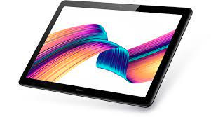
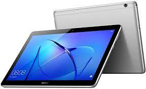
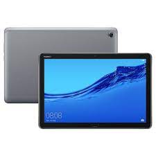
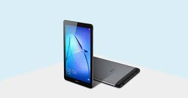
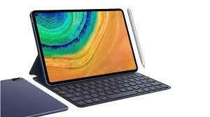

Huawei MediaPad T5
a tableta MediaPad T5 de HUAWEI cuenta con una pantalla de 10,1 pulgadas y 1080p
( 1920 x 1200) de borde curvo. Para una experiencia de visualización aún mejor,
la tecnología ClariVu de HUAWEI mejora aún más el brillo y la claridad de la pantalla.
Kirin 659 y conectividad de red Wi-Fi estable. F2.4 y 5 MP Cámara trasera; F2.4 y
2 MP Cámara frontal. 2G RAM + 16G ROM HDD (microSD expandible a 256GB)
Sonido, diseñado con Harman Kardon, el sistema de doble altavoz de la tableta ofrece
efectos de audio de sala de conciertos afinados y optimizados con precisión,
más graves y menos distorsión. El gran sonido te sumerge en la escena.
La tecnología de audio HUAWEI Histen 5.0 hace que el sonido sea más rico,
ofreciéndote una experiencia cinematográfica envolvente.
|

Huawei Mediapad T3 10
Una batería de 4800 mAh proporciona un disfrute duradero, incluso con un uso intensivo.
acceso inteligente a aplicaciones, un lector de huellas dactilares y el control de
contenido le permiten autorizar que otros usen su dispositivo de manera que les otorgue plena autoridad.
Los modos especiales de protección ocular y de baja luminosidad evitan la fatiga
ocular y reducen la interferencia con los patrones naturales de sueño.
Android 7.0 (turrón) + Huawei EMUI 5.1 proporcionan una experiencia cohesiva y sin fricción.
Cuerpo de aluminio anodizado de una sola pieza para que pueda sentir la calidad, ROM-16 G,
RAM-2GB o ROM-32GB, RAM-3 GB Cámara trasera con enfoque automatizado de 5 Mp, y la delantera de 2 Mp.
|

Huawei MediaPad M5
Curved-edge 2.5D curved glass ya está disponible en la tableta Android M5.
Nunca te preocuparás de perderte un detalle con la pantalla de alta resolución
de 359 PPI (2560 x 1600)2K de M5. La proporción de pantalla a cuerpo del 82% significa
que puede disfrutar de una visión más amplia que antes. Los altavoces estéreo sintonizados
y certificados por Harman Kardon proporcionan una experiencia de audio y vídeo de primer
orden, así como auriculares HiFi. El cuerpo metálico curvado del M5 crea un elegante y
bello diseño industrial que destaca por su sencillez. Tableta androide M5 que cuenta
con un chipset de núcleo octavo patentado de la serie Kirin 960 y conectividad de red Wi-Fi estable.
Cámara trasera de 13 MP, y cámara frontal de 8 MP. 4G + 64G DE ROM
|

Huawei Mediapad T3 7
El MediaPad T3 7 de HUAWEI ofrece una experiencia de belleza visual y táctil. Su mundo se verá y
se sentirá a la perfección gracias a su vibrante pantalla de 7 pulgadas con un diseño de bisel
ultra estrecho de 6,1 mm. Este potente dispositivo te sorprenderá y deleitará con su forma y función,
con sólo 8,6 mm de grosor, y con sólo 245 gramos de peso se siente como un objeto del futuro.
El aspecto elegante del MediaPad T3 7 de HUAWEI en una pieza sólida de aluminio anodizado del
siglo XXII, y te hace sentir el poder del diseño en tus manos. MTK MT8127 Quad-core A7, 4 x 1.3 GHz,
1 GB de memoria 16 GB Flash Storage, 1G RAM + 16G ROM, una batería de 3100 mAh ofrece un disfrute duradero,
incluso con un uso intensivo. ámara frontal 2 MP y cámara trasera 2.0 MP, Android M + EMUI 4.1 Lite
|

HUAWEI MatePad 10.4
Se trata de una tablet que integra una pantalla FullView de 10,4 pulgadas y destaca por
la vivacidad de sus colores. En cuanto al audio, el sistema Histen 6.0 3D estéreo de cuatro
altavoces proporciona un sonido envolvente y lleno de detalles. Gracias a su batería de 7250 mAh,
se pueden visualizar hasta 12 horas de vídeo sin necesidad de carga. Además,
en tan solo 3 horas se carga completamente. En cuanto a las especificaciones técnicas,
tiene una memoria RAM de 4 GB y una ROM de 64 GB. El sistema operativo es el EMUI 10.0.1,
basado en el Android 10 y el procesador el Kirin 810 de 7nm. La gran virtud de este modelo
es que ajusta automáticamente el contraste, el brillo y la definición a fin de sacar rendimiento
al modo libro electrónico. Como punto negativo, no cuenta con los servicios de Google preinstalados.
|
HUAWEI MatePad Pro
Si algo hay que destacar de esta tablet Huawei, es que cuenta con un modo multipantalla que
permite arrastrar archivos de un dispositivo a otro y utilizarlos simultáneamente
(aunque solo puede hacerse con modelos con sistema operativo EMUI 10.0 o superior).
La pantalla es bastante grande en relación a otros prototipos de la marca y comprende
resolución FullView. El sistema de sonido es el Histen 6.0 3D de cuatro altavoces y está
sincronizado por Harman Kardon, lo cual significa que la experiencia en este punto será bastante óptima.
En relación al procesador, señalar que es el Kirin 990 de 8 núcleos, diseñado para conseguir una mayor
eficiencia energética. Lo anterior unido a una RAM de 6 GB y un almacenamiento interno de 128 GB,
convierte a la tablet en un ejemplar verdaderamente fluido. Finalmente, gracias a la batería de
7250 mAh se pueden reproducir hasta 12 horas de vídeo sin cargar.
|